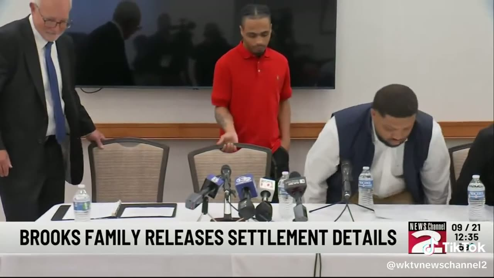

Three Doors, One Pattern
A 20-year-old dies behind the arraignment door in Queens. New York pays $24 million for Robert Brooks. A housing program for people leaving custody gets a one-hour Zoom. Side by side, they show where the system's money and attention actually land.
On the evening of September 16, 2026, correction officers at Queens Criminal Court found Luis Alberto Lopez Castillo, 20, in medical distress shortly after he had appeared before a judge. He was pronounced dead at Jamaica Hospital. He was the eighth person to die in New York City Department of Correction custody this year (Queens Daily Eagle). Five days later, upstate, the family of Robert Brooks announced that New York State would pay them $24 million over his beating death by corrections officers at Marcy Correctional Facility (WRVO).
The same week, the Center for Justice Innovation announced a one-hour webinar for October 14 on a question that sits upstream of both deaths: whether the people moving through courts and jails have anywhere to live (Center for Justice Innovation). They come from three institutions and sit at three different doors a person can pass through in the New York system. What connects them is when the state actually shows up.
The first door: the one behind the arraignment courtroom
A New York City public defender who posts on TikTok as @carolineisocool put the Queens death in the terms most people never see. Arraignments are open to the public, and she tells viewers to go watch one. What they will see is orderly: a judge, court officers, people brought in, a decision made. What they will not see is the holding area on the other side of the door.
In her account, that room can hold 100 to 200 people waiting to see a judge, watched by a handful of officers. She describes people in active withdrawal, people in obvious mental health crisis, clients lying on the floor asking to go to the hospital, and people who say a plain cheese sandwich is all they have eaten in 24 hours. Last winter, she says, people were released from that room into snowstorms in slides and no coat, with a MetroCard and no phone, because their property was still at the precinct where they were first booked.
"All it takes is an allegation for any of us to be in their position."@carolineisocool, New York City public defender, TikTok
Her video mentions a second case from this year, and the public record bears it out. In May, Samantha Randazzo went into labor after more than a day in NYPD custody and gave birth on a bench in a Brooklyn arraignment courtroom, with no medical staff in the building; a court officer delivered the baby (NBC News). Brooklyn Defender Services and other public defender offices argued that the charges, drug possession and trespass, should have been handled with a desk appearance ticket and never reached a cell at all (Brooklyn Defender Services).
Luis Alberto Lopez Castillo
- Age
- 20
- Where
- Queens Criminal Court
- Date
- Sept. 16, 2026, about 6:30 p.m.
- Custody
- NYC Department of Correction
- Status of case
- Pending charges; convicted of nothing
- Outcome
- Died; cause pending with the medical examiner
Samantha Randazzo
- Age
- 33
- Where
- Brooklyn arraignment courtroom
- Date
- May 16, 2026, just before midnight
- Custody
- NYPD
- Charges
- Drug possession, trespass
- Outcome
- Gave birth on a courtroom bench, no medical staff on site
Lopez Castillo had been held since October 2025 on robbery-related charges in Queens and a separate case in the Bronx, according to the Queens Daily Eagle. He had not been convicted of any of them. The Department of Correction released no details on how he died. Commissioner Stanley Richards called it "a heartbreaking moment for me and the entire department" and said the agency would investigate with city and state authorities. The city Board of Correction, which is required to investigate every death in DOC custody, counted 15 in 2025, the most in years (NYC Board of Correction, Jan. 21, 2026).
If you have a court date in Queens, here is what the building and the process actually look like. If someone you love was just arrested, whether they get a desk appearance ticket instead of a night in that room is the first decision that matters.
The second door: the infirmary at Marcy
On December 9, 2024, officers at Marcy Correctional Facility in Oneida County punched and kicked Robert Brooks in the face, abdomen and groin inside the prison infirmary. He died hours later at a hospital in Utica (Associated Press, via The Leader). He was serving a 12-year sentence for a 2016 stabbing. Inside, he had earned his GED, received mental health treatment, earned an ASL certificate and worked in horticulture (WRVO).

The $24 million resolves two cases: a federal civil rights lawsuit and a claim in the New York State Court of Claims over battery and negligent supervision. Family attorney Elizabeth Mazur said it is thought to be the largest prison death settlement in the country. "It's a very large amount of money, and candidly it had to be," she said (CNY Central). The family plans to start a foundation for prison reform.
"No amount of money could ever bring him back."Robert Brooks Jr., WKTV, Sept. 21, 2026
Brooks' death, and the killing of Messiah Nantwi by a different group of officers months later, are the reason New York passed its prison oversight omnibus law. Governor Hochul signed it on December 19, 2025, and her own announcement names both men. Among other things, it requires camera coverage across state prisons and requires state and local correctional facilities to turn over video related to a death in custody to the Attorney General within 72 hours (Office of the Governor). The law, the cameras and the settlement all arrived after a man was already dead.
The third door: the one out
The third item is the quietest. On October 14, 2026, from 3 to 4 p.m. Eastern, the Center for Justice Innovation is hosting "Building Community Justice: Housing Strategies for Diversion and Re-Entry," a free Zoom webinar. Programs from Kansas City, Missouri; Pittsburgh; and Dayton, Ohio, all members of the Center's Housing Justice Peer Network, will describe how they partnered courts and defenders with housing providers (Center for Justice Innovation).
The Center's event page states the premise plainly: people experiencing homelessness are arrested at higher rates, and people who are arrested are "10 times more likely to experience homelessness." That is the loop the public defender describes from the other side of the door. Someone is picked up, held for a day, released at night with a MetroCard, and back in front of the same judge weeks later because nothing about their situation changed. The Peer Network itself is a free, 16-month virtual program run with NYU's Furman Center to help local agencies remove housing barriers for people who have been arrested or incarcerated (Center for Justice Innovation).
New York City's own numbers show what the alternative costs. The City Comptroller put the Department of Correction's spending at $507,000 per person held for a year, as of 2023 (NYC Comptroller, July 16, 2024). For what housing rights people with records actually have in the city, see Case Analytica's explainer on the Fair Chance for Housing Act.
Registration is open through the Center's Zoom page.
The pattern underneath all three
Put side by side, these three items describe one timing problem. New York's money and attention arrive after the door has closed. A family receives $24 million after a man is beaten to death in a prison infirmary. A camera mandate and a death-disclosure deadline arrive after two men are killed. A medical examiner will rule on a 20-year-old's death after he was held for most of a year on charges nobody had proven. The places where harm could have been stopped earlier get the least of both: a holding room the public cannot enter, a courthouse with no medical staff, and a plan for where someone sleeps on release that, in the one item here devoted to it, fits into an hour on Zoom.
These three items come from different institutions and do not prove one another. Lopez Castillo died in city custody; his cause of death is undetermined, and no one has been found responsible for it. Brooks died in a state prison, and the people who killed him were prosecuted. The Center for Justice Innovation is a national nonprofit, and its webinar features programs outside New York. A webinar is a small event by design, and housing programs run all year whether or not anyone is watching the Zoom.
But the through-line holds. The Brooks settlement is compensation for a death, and the omnibus law is a response to deaths. Both are real, and both are after the fact. The public defender's point is the one worth taking from this week: the room where people are most exposed is the one the fewest people ever see, and all it takes to end up in it is an allegation.
What happens next
Three things to track, in order. First, the medical examiner's ruling on Lopez Castillo's death, and the Board of Correction's own investigation, which it publishes in its reports on deaths in custody. Second, whether the video from Queens Criminal Court goes to the Attorney General within the 72 hours the omnibus law requires of local facilities, according to the Governor's announcement. Third, what the Brooks family's foundation funds, because a family that has already turned a $24 million settlement into a public campaign has said, through Brooks' brother Jared Ricks, that "the fight is not over."
A note on the media above. Exhibit A is a public TikTok by a New York City public defender, quoted and described for her firsthand account of arraignment holding areas; she is not a party to either case. Exhibit B is WKTV NewsChannel 2's own report as the station posted it publicly on TikTok, including body-worn camera footage the station had already blurred. Exhibit C is the Center for Justice Innovation's own event flyer. No booking photo of anyone named here was used.